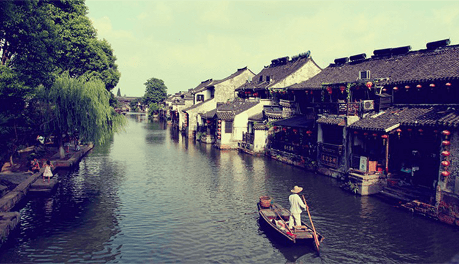

同里古镇

同理镇，位于太湖之畔古运河之东。建于宋代，至今已有1000多年历史，是名副其实的水乡古镇.同理距苏州市18公里距上海80公里，是为江南六大著名水乡之一。同里古镇于1986年对外开放。清明古朴的同里小镇，水田肥沃物丰富蔗人杰地灵，素有“东方小威尼斯”之誉。同里的特点在于明清建筑多，水乡小桥.
同里古镇风景优美，镇外四面环水，古镇镶嵌于同里，九里、叶泽、南星，庞山五湖之中。镇区被川字形的15条小路非常美丽。
同里古镇于1986年对外开放。清明古朴的同里小镇，水田肥沃物丰富蔗，人杰地灵，素有“东方小威尼斯”之誉。同里的特点在于明清建筑多，水乡小桥多，名人志...